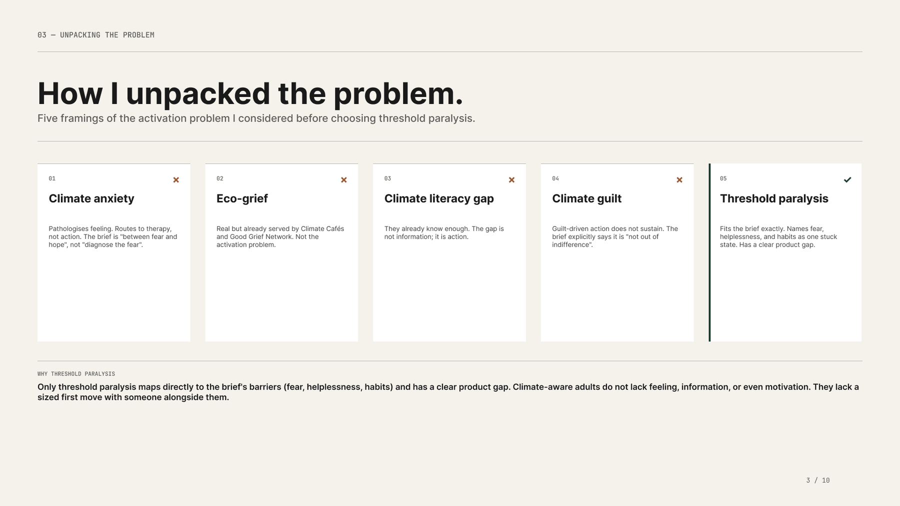
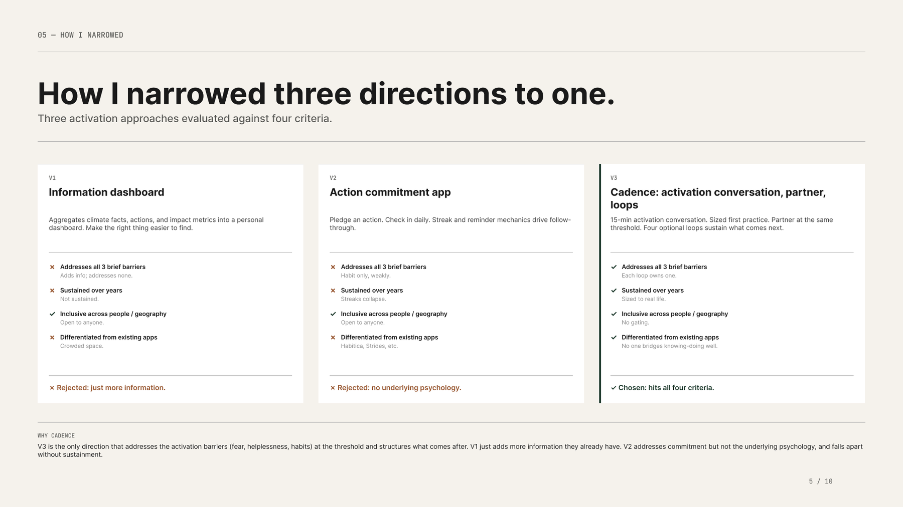
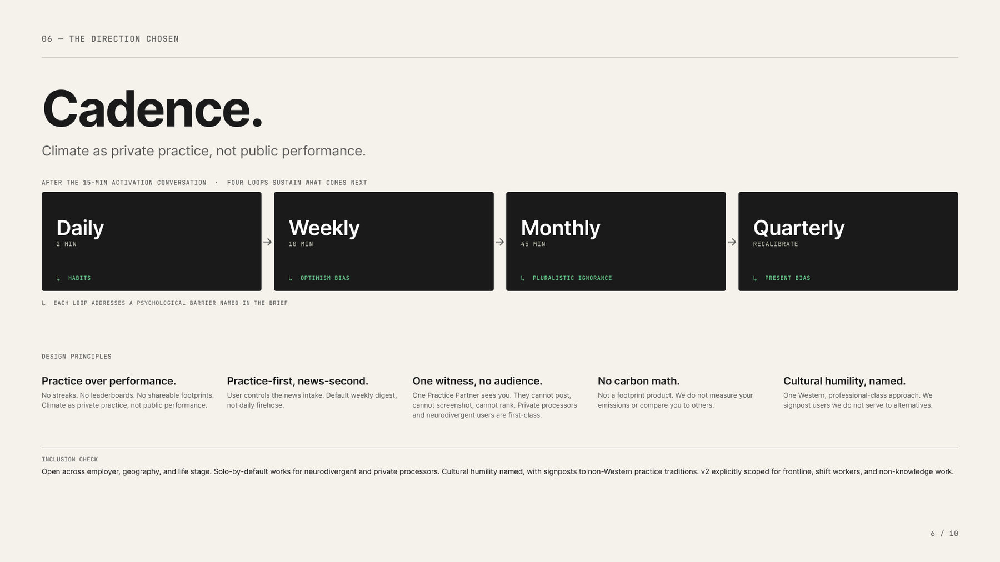
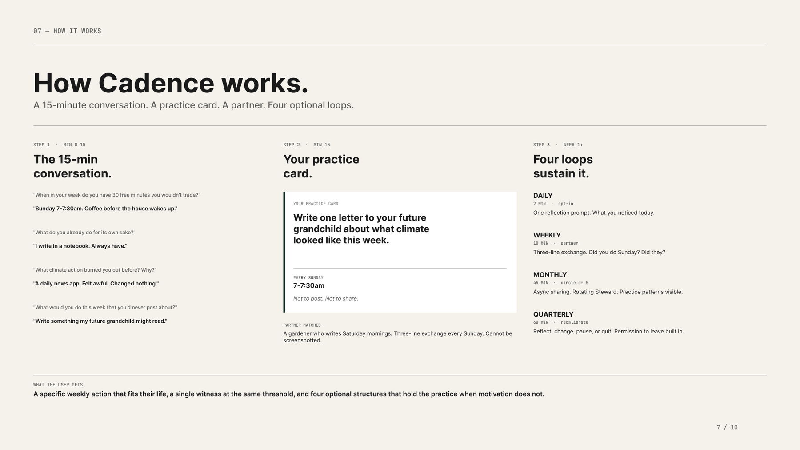
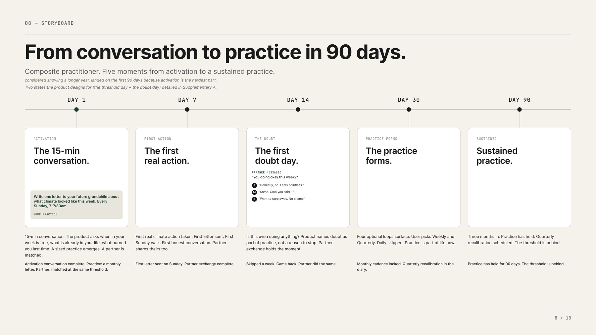
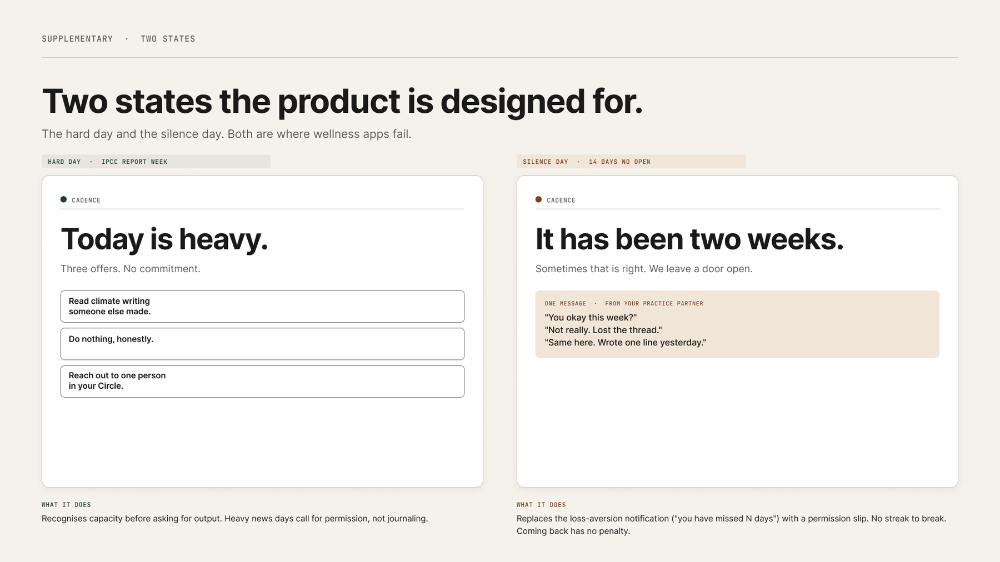
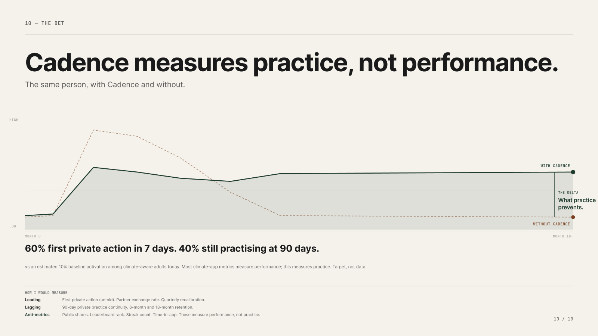

Climate-aware adults know what needs to happen but get stuck at the threshold of doing. Cadence is a concept that moves them across it: a 15-minute activation conversation, one sized practice card, a single partner at the same threshold, and four optional loops that hold the practice when motivation does not.
Climate-aware adults — late 20s to 50s, reading the news, feeling the weight — know what needs to happen but get stuck at the threshold. Fear of pointlessness, helplessness about scale, and habit-inertia keep them from a first deliberate act. What's missing is not information or motivation. What's missing is private practice, and a category for it, so the first action has somewhere to belong.
Online performance feels easier than private practice.
Bridge knowing to doing. Get climate-aware adults from contemplation to a sized first action within 7 days, and to a sustained practice at 90 days — measured by activation rate and 90-day retention, not engagement metrics.
Sized to real life, not heroic. Personal, but not individualising. Honest about scale and limits. Inclusive across language, accessibility, life stage, political context. Non-clinical — respects the line between mental health and product.
Before framing, I mapped where climate-aware adults currently land — and why each category fails at the threshold:
| Category | Examples | Where it breaks |
|---|---|---|
| Carbon trackers | Footprint calculators, offset apps | Carbon math individualises a systemic problem and converts feeling into guilt accounting. Measurement isn't practice. |
| Action / habit apps | Habitica, Strides, pledge apps | Streak mechanics collapse under real life. Habit-only framing addresses commitment, not the underlying psychology. |
| Grief & support spaces | Climate Cafés, Good Grief Network | Real and valuable for processing — but they serve eco-grief, not activation. Feeling is held; the first act still has nowhere to go. |
| Mindfulness / journaling | Meditation and mood apps | Pathologises the feeling and routes to self-soothing. The brief is between fear and hope — not "diagnose the fear." |
The gap: nothing bridges knowing and doing at the moment of threshold — with someone alongside you. That's the category Cadence creates.
Five framings of the activation problem, considered and scored against the barriers — fear, helplessness, habits. Climate anxiety pathologises feeling. Eco-grief is already served. The literacy gap isn't the gap. Guilt doesn't sustain. Threshold paralysis names all three barriers as one stuck state and has a clear product gap.

Five framings considered, one chosen — with the rejection reasoning kept visible.
Three activation approaches evaluated against four criteria: addresses all three barriers, sustained over years, inclusive across people and geography, differentiated from existing apps. An information dashboard just adds more information. A commitment app has no underlying psychology and collapses with its streaks. The activation conversation hits all four.

V1 and V2 rejected with reasons on the page; V3 chosen because it hits all four criteria.
After the 15-minute activation conversation, four optional loops sustain what comes next — and each loop addresses a psychological barrier by name: daily (habits), weekly (optimism bias), monthly (pluralistic ignorance), quarterly (present bias).

Four nested loops and five design principles: practice over performance, practice-first news-second, one witness no audience, no carbon math, cultural humility named.
The 15-minute conversation asks four questions — when is your week actually free, what do you already do for its own sake, what burned you out before, what would you do that you'd never post about. Out of it comes one sized practice card, a matched partner at the same threshold, and the four loops.

What the user gets: a specific weekly action that fits their life, a single witness, and structure that holds when motivation doesn't.
A composite practitioner across five moments — activation, first action, the first doubt day, practice forming, sustained practice. I considered showing a longer year and landed on the first 90 days, because activation is the hardest part.

Day 14 is designed for, not around: doubt is named as part of practice, and the partner exchange holds the moment.
The hard day and the silence day — both are where wellness apps fail. On a heavy-news day, Cadence recognises capacity before asking for output: three offers, no commitment, "do nothing, honestly" included. After two weeks of silence, the loss-aversion notification is replaced with a permission slip. No streak to break; coming back has no penalty.

"Today is heavy" and "It has been two weeks" — capacity-first design instead of engagement recovery.
The bet: 60% take a first private action within 7 days, and 40% are still practising at 90 days — against an estimated ~10% baseline activation among climate-aware adults today. Most climate-app metrics measure performance; this measures practice.

The same person, with and without a held practice: the delta is what practice prevents.
First private action (untold). Partner exchange rate. Quarterly recalibration.
90-day private practice continuity. 6-month and 18-month retention.
Public shares. Leaderboard rank. Streak count. Time-in-app. These measure performance, not practice.
Solo-by-default works for neurodivergent users and private processors. Cultural humility is named, with signposts to non-Western practice traditions. v2 explicitly scoped for frontline, shift workers, and non-knowledge work.
Cadence respects the line between mental health and product. Clinical distress routes outward — to a therapist directory and crisis resources — never into the product loop.
Each refusal is load-bearing: streaks collapse, leaderboards perform, carbon math individualises, and shareable output turns private practice back into public performance.
Five framings and three directions are on the page with their rejection reasons — because the strength of a direction is only legible next to the alternatives it beat.
The hard day and the silence day shaped more of the product than the happy path did. If a behavior product only works when the user is motivated, it doesn't work.